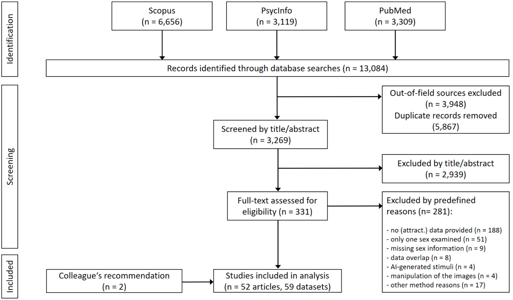
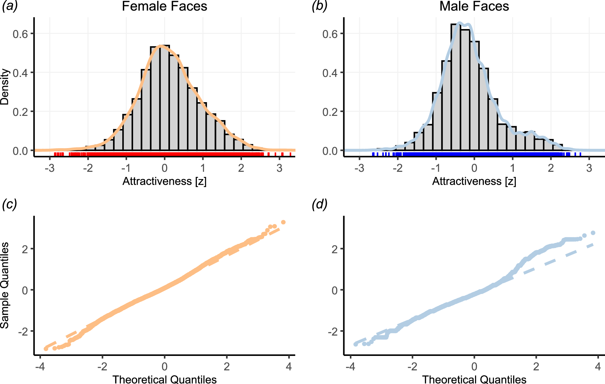
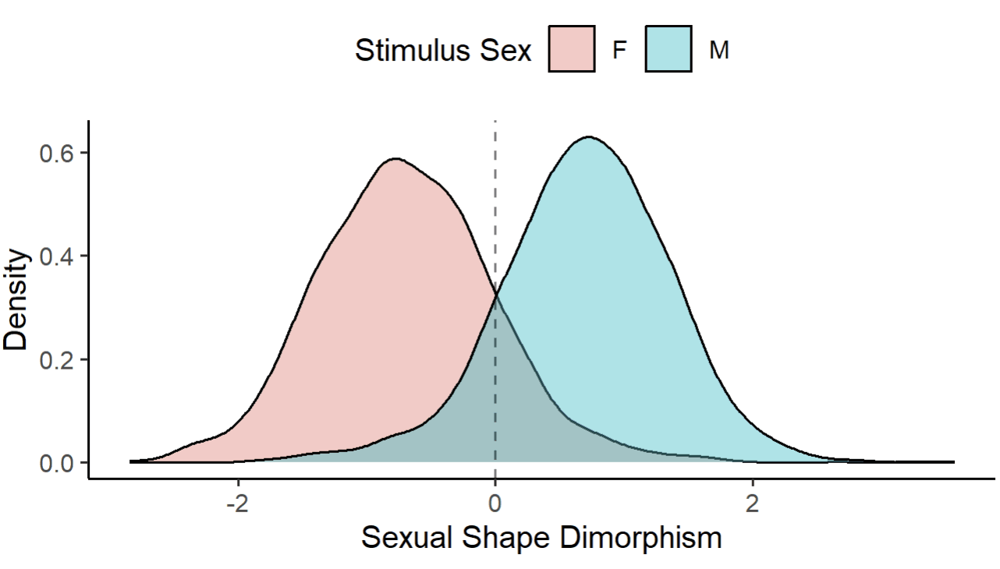
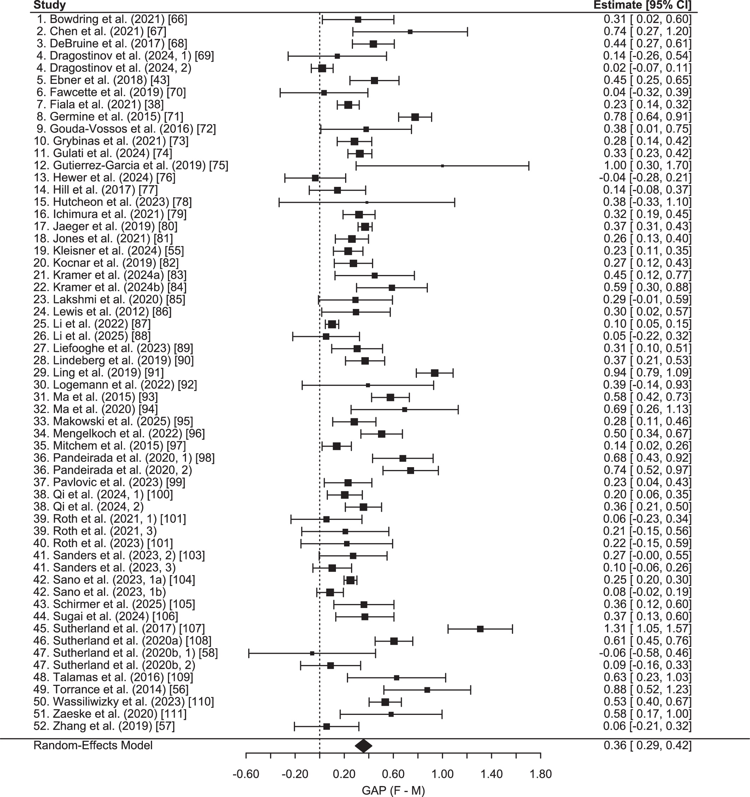
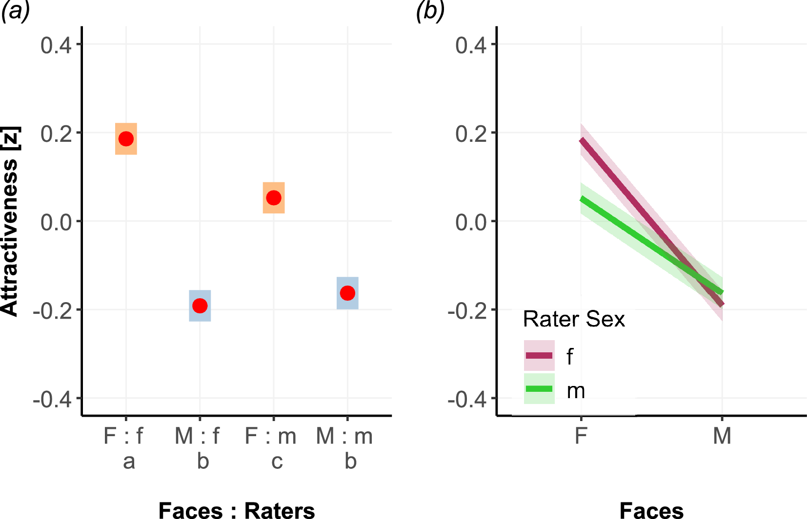
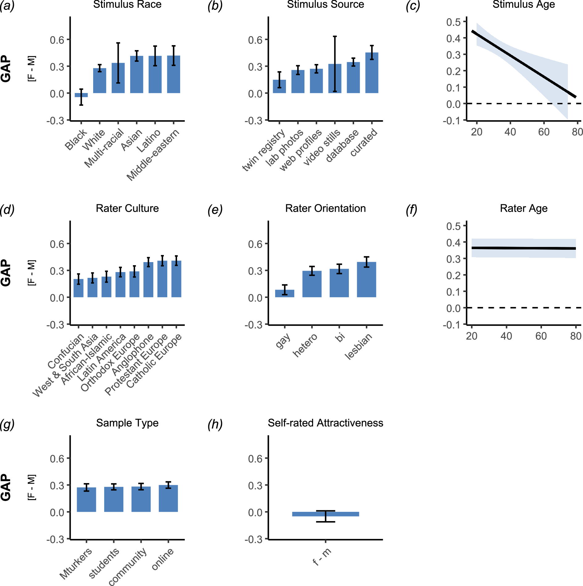
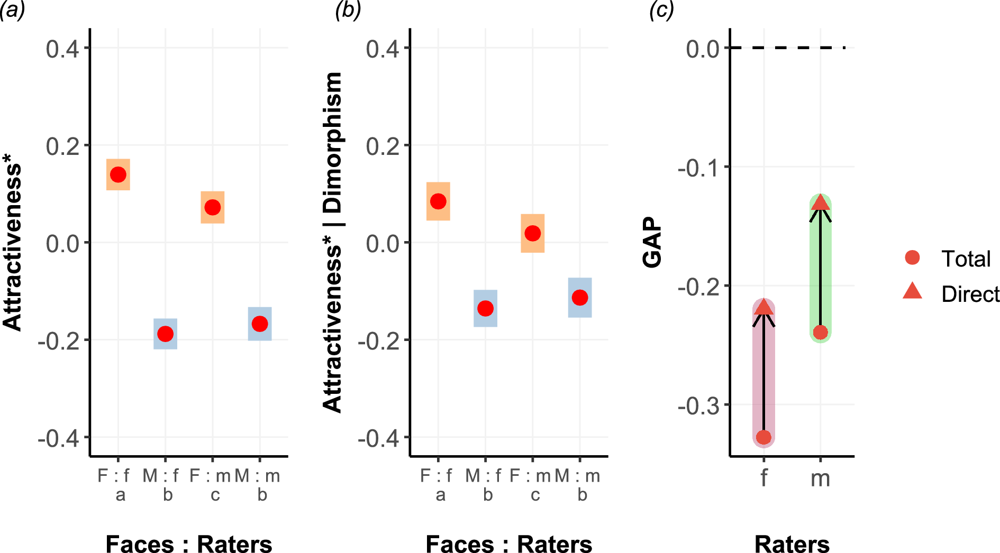

1 引言
- 面孔吸引力评价在人类择偶过程中发挥着关键作用
- 在个体和群体中普遍观察到的偏好，可能是进化中发展出来的，用来提高包括适应度（inclusive fitness）
- 通过后代的生存和繁衍，提高整体的遗传意义上的成功程度
- 选择遗传质量较高的配偶是达成的途径之一
- 面孔平均性（facial averageness）是一个典型案例
- 个体面部结构特征与总体人群平均面孔的接近程度
- 平均的面孔表示较高的遗传多样性，从而推导出更强的免疫能力、更稳定的发育过程、更高的总体生物学质量
- 个体对平均性较高面孔的偏好，相当于间接选择遗传质量较高的配偶
- 由于亲代投资（parental investment）的不同，两性在择偶方面有不同的策略
- 大多数有性繁殖的物种，雌性是更有选择性的一方，雄性需要竞争获得青睐
- 解释了性别二态性（sexual dimorphism）：两性外表存在差异，雄性更多装饰性
- 但是在人类中相反，“美丽的性别”更多是指女性
- 大多数有性繁殖的物种，雌性是更有选择性的一方，雄性需要竞争获得青睐
- 男性繁殖成功与否后果差异较大，所以男性面孔差异大，女性更为平均，更好看
- 激素影响，使女性面孔更像娃娃脸
- 性别二态性（Sex Dimorphism）
- 性别吸引力差异（gender attractiveness gap，GAP）存在已久，但并没有被关注
- 很多理论家认为女性比男性面孔更具有吸引力，但理论家大多是男性，女性视角缺乏直接证据
- 元分析和汇总（pooled）分析进行检验
- 男性和女性对同性和异性面孔的评分
- 52个研究，76个国家，约28500评分者，17000个面孔刺激，150万评分
- 使用原始面孔刺激进行大样本几何形态测量（geometric morphometric）分析
- 开发自动管道，为分析提供便利
2 方法
2.1 研究识别和数据整合

- 图 1 展示了完整的纳入流程
- 女性面孔：7383；男性面孔7992
- 吸引力根据性别分别进行标准化

- 图 2 展示了分性别对吸引力进行标准化后的分布情况
- 两性面孔在中间部分都符合正态分布
- 男性面孔有明显的向左（低分）偏移
- 男性面孔右侧尾部相对突出，说明高分多于正态分布预期
2.2 统计分析
- 原始数据、区分评分者性别
- 所有分析尽可能纳入最多的数据
2.3 元分析
- GAP：女性面孔和男性面孔的吸引力边际均值差异
- 面孔性别为固定效应，为评分者和刺激设置随机截距
- 如果有评分者性别，将其纳入进行交互效应检验
- 基于每个研究，得到女-男的值和标准误，使用REML进行随机效应元分析
2.4 合并交互作用分析
- 基于每个研究的均值进行合并，进行元分析
- 对于提供了原始数据的样本，也进行被试层面的分析作为敏感性检验
2.5 合并稳定性分析
- 使用原始数据进行稳定性分析，检验不同变量的调节效应
- 评分者：文化背景、性取向、年龄、样本类型
- 刺激：种族、刺激来源、刺激年龄
- 事后检验使用Bonferroni-corrected
- 6个研究进行了自我吸引力评价，也进行了自我吸引力GAP的分析
2.6 形态中介分析
- GAP在多大程度上由男性和女性面孔的结构特征所中介
- 性别形态二态性（sexual shape dimorphism，SShD）
- 综合衡量女性化或男性化程度的几何指标
- 对面部标志点进行统计形状分析，评估个体面孔与基于总体建立的男性和女性参考构型之间的普氏拟合程度（Procrustes fit）
- 将面孔置于女性—男性连续体上：数值越负，表示面孔越女性化；数值越正，表示面孔越男性化；接近零的数值则表示面孔较为中性

- 通常偏好异性的典型性较高的面孔，但也受文化等影响，尤其是女性对男性面孔的偏好
- SShD既与刺激面孔性别相关，也与感知吸引力相关，所以作为中介
- 需要排除年轻程度和面孔平均性的影响
- 面孔平均性采用客观形态测量指标表示，计算和平均构型之间的普氏残差（Procrustes residuals）
- 用年轻程度和面孔平均性对吸引力建立回归，得到的残差作为中介效应的因变量
- SShD和面孔平均性不相关，所以残差话不会消除SShD的影响
- 使用深度神经网络对数据库中的面孔进行形态测量分析，得到数据库样本的女性化—男性化程度和平均性指标
- 为刺激、研究和评分者设置随机截距，最后残差分布也合理
2.7 软件
- R 4.4.1
lme4、emmeans、metafor
3 结果
3.1 元分析

- 图 4 显示女性在面孔吸引力方面存在显著优势
3.2 合并交互作用分析（面孔性别×评分者性别）

- 主效应和交互效应均显著
- 男性面孔受到更低的吸引力评价
- 男性评分者倾向于给出更低的评价
- 女性对不同性别面孔的评价差异更大
3.3 合并稳定性分析

- 加入各种调节变量后，面孔评分性别差异的显著性依然稳健（F-values >100，p-values < 0.001）
- 面孔性别和大多数调节变量的交互都是显著的
- 评分者年龄和样本类型不显著
- 黑人面孔和老年面孔GAP接近0
- 自我评价不存在GAP
3.4 形态中介分析

- 在两性中，男性面孔得分还是低于女性
- 面孔性别（男）显著正向预测SShD（数值越大说明越像男性），SShD显著负向预测GAP，说明可以进行中介分析
- 加入中介后，直接效应显著，部分中介
- 女性评分者中介了33.25%，男性评分者中介了42.98%，男性的GAP更小，但中介的更多
- bootstrap后中介的值相同
4 讨论
- 发现了稳健的男性面孔评价低于女性面孔
- 女性评分者中GAP更明显
- 男女评价男性面孔结果一致，但评价女性面孔时，女性会给出更高的分，即使控制了面部结构
- 为什么女性评分不符合性吸引原则？
- 女性评价男性，视觉信息使用更少
- 社会规范和自我呈现顾虑，不鼓励女性表达欲望
- 为什么女性对其他女性的评价更宽厚？
- 社会文化
- 从小社会要求重视外表
- 比男性接触更多强化理想化女性美貌标准的媒体内容
- 社会允许甚至鼓励女性相互积极评价外表
- 同伴团结和外貌上的共同压力
- 社会文化
- 男性评价符合浪漫吸引原则，女性不符合
- 对测量不变性构成了挑战，男女对面孔吸引力评价的心理结构可能不一致
- 可能改进：这张脸有多吸引人（How attractive is this face?）转变为你觉得这个人有多吸引你（How much do you feel physically attracted to this person?）
- 对测量不变性构成了挑战，男女对面孔吸引力评价的心理结构可能不一致
- 男性对面孔评分更严格
- 和面孔性别比，评分者性别的差异相对较小
- 与其他大样本研究比，男性评价者对面孔评分的差异（d = −0.18）大于产品评价（d = −0.05）和旅行目的地评价（d = −0.01），更接近电影评价（d = −0.14）和音乐评价（d = −0.16）
- 在大部分调节变量处理下，结果会发生变化
- 随着年龄增长，评价会越来越严格是稳定的
- 性别形态二态性部分中介GAP
- 在男女面孔中，中介的值相同，但男性GAP效应更小，所以占比更高
- 控制面孔形态后，女性面孔评分降低，男性面孔评分升高
- 控制面孔形态后，男性评分者对女性的面孔评价还是更严，但对男性的面孔评价不再更严格，说明男性评价的严格性和性别有关
- 黑人面孔，男性评分者没有差异，女性评分者还是有GAP
- 纳入SShD后，GAP消失
5 总结
- 稳健的面孔吸引力的性别差异
- 女性评分者对女性评价更宽厚，对男性更苛刻
- 女性气质和美丽联系的内化文化规范
- 女性之间的同伴团结感
- 形态测量分析表明性别形态二态性是面孔吸引力判断的一个基础结构
- 文化因素很重要
参考文献
Wassiliwizky, E., Zietsch, B. P., Kleisner, K., & Ullén, F. (2026). The gender attractiveness gap. Proceedings of the Royal Society B: Biological Sciences, 293(2071), 20260362. https://doi.org/10.1098/rspb.2026.0362